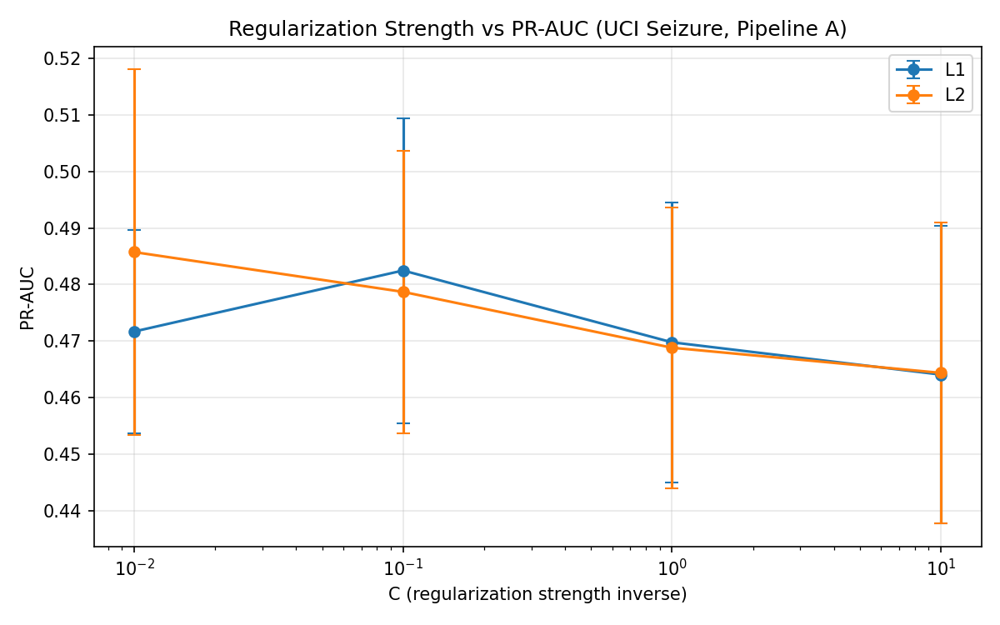
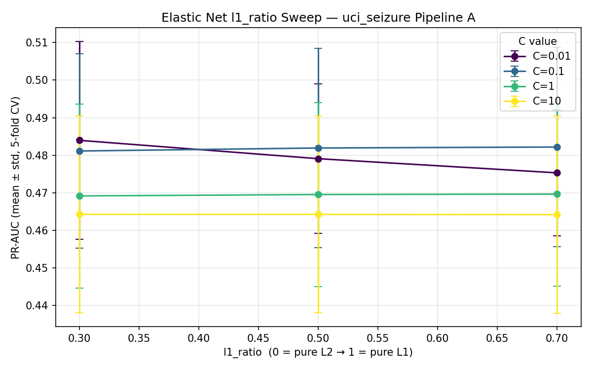
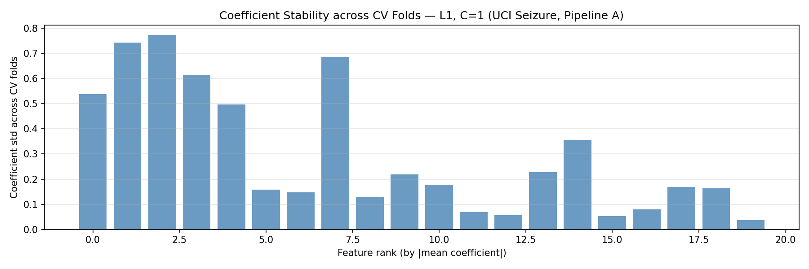
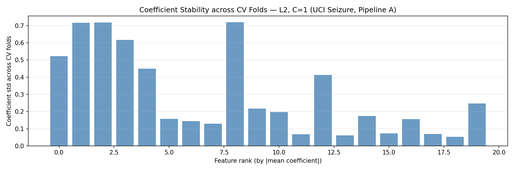
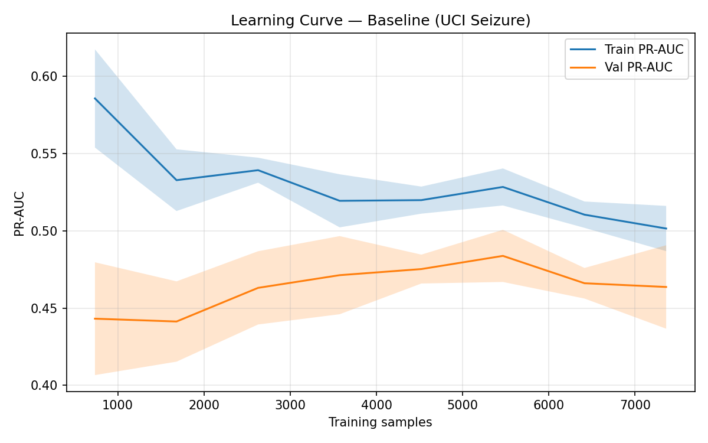
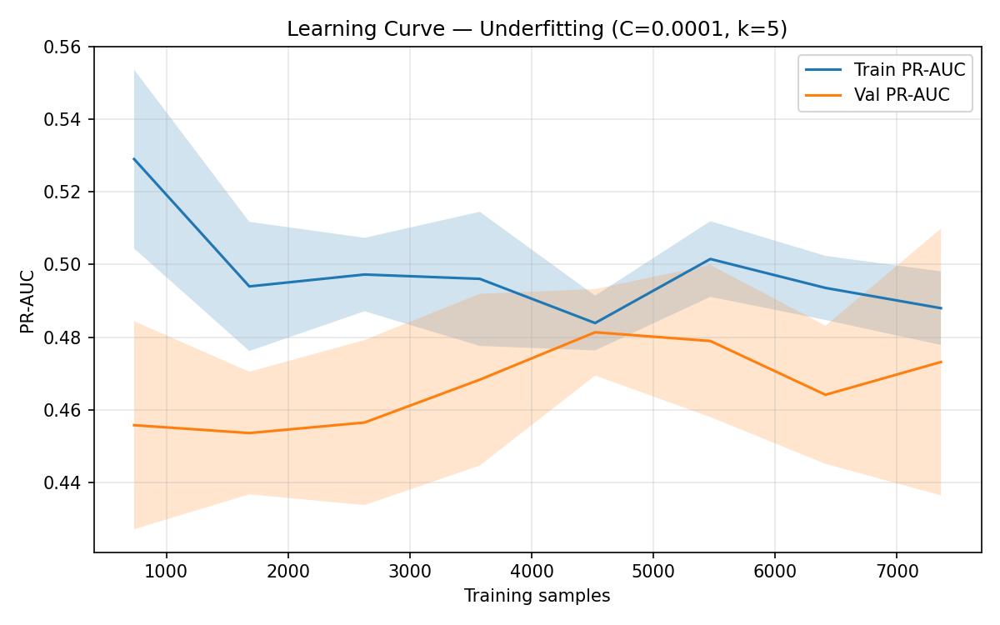
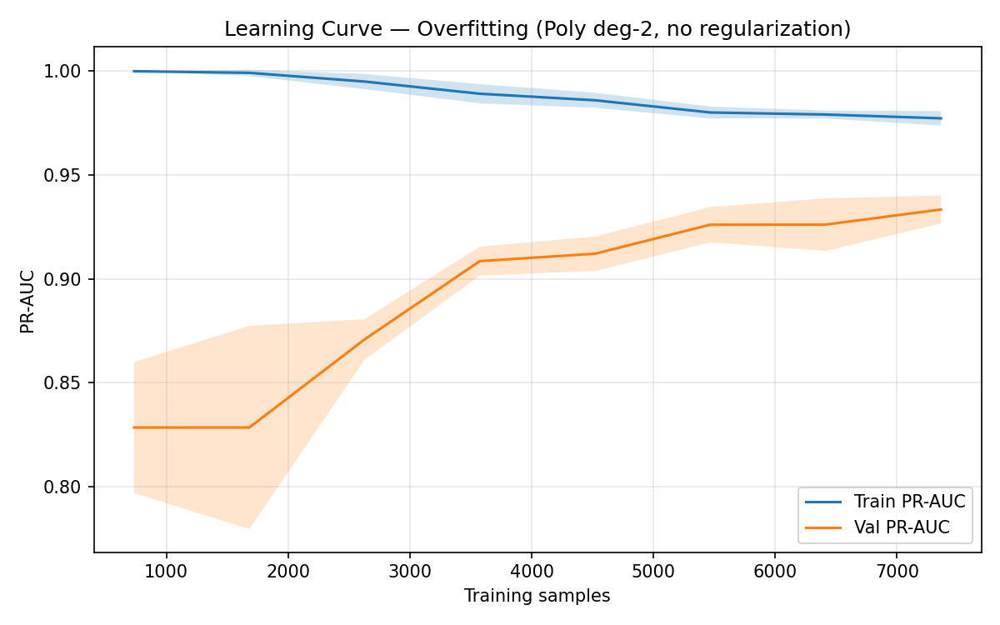

EEG-Based State Classification · Logistic Regression Study
3 Datasets5 Hypotheses10 TablesBest PR-AUC 0.811
Research Study
EEG-Based State Classification
"How do preprocessing pipelines, regularization strategies, and class-imbalance
handling interact to affect logistic regression performance on EEG datasets with
varying characteristics?"
3 EEG Datasets
547 Data Files
5 Hypotheses Tested
10 Result Tables
3 Pipelines (A, B, C)
Total Error=Bias²+Variance+Noise
The fundamental bias-variance decomposition guiding all regularization and pipeline design decisions in this study.
3
Datasets
UCI Seizure · Bonn EEG · Eye State
547
Data Files
Across all three datasets
0.811
Best PR-AUC
Bonn EEG · Pipeline A
Pipe A + L2
Best Config
C=1 · Bonn EEG dataset
5
Hypotheses
H1–H5 · Kruskal-Wallis / Mann-Whitney
10
Result Tables
Holdout · Baseline · Reg · Imbalance
Dataset Summary
Three EEG datasets with distinct characteristics, class distributions, and classification challenges.
UCI Seizure
Seizure Detection
11,500
Samples
178
Features
1:4
Class Ratio
0.452
Holdout PR-AUC
Seizure class (minority)
Non-seizure (majority)
Bonn EEG
Ictal vs Non-Ictal
500
Samples
6
Features (eng.)
mild
Imbalance
0.811
Holdout PR-AUC
Ictal (seizure) class
Non-ictal class
EEG Eye State
Eye Open / Closed
14,980
Samples
14
Features
~45:55
Class Ratio
0.593
Holdout PR-AUC
Eye closed (class 1)
Eye open (class 0)
Experiment Architecture
End-to-end workflow from raw EEG data to final evaluation metrics.
Five statistical hypotheses tested using non-parametric tests (α = 0.05).
H1Partial
Pipeline Effect on Performance
Does preprocessing pipeline choice significantly affect PR-AUC across datasets?
UCI p=0.166 (n.s.) · Eye State p=0.000082 ✓
H2Not Sig.
Regularization Generalization
Does regularization type (L1/L2/EN) significantly affect holdout PR-AUC?
L1 vs L2 p=0.914 · L1 vs EN p=0.698 · L2 vs EN p=0.769
H3Not Sig.
ElasticNet Advantage
Does ElasticNet outperform pure L1/L2 regularization on Bonn EEG?
L1 vs L2 p=0.380 · L1 vs EN p=0.544 · L2 vs EN p=0.314
H4Not Sig.
Imbalance × Regularization
Does imbalance handling method interact with regularization type?
All pairwise comparisons p > 0.2 (none significant)
H5SIGNIFICANT
Polynomial Overfitting
Does polynomial feature expansion cause significant overfitting vs baseline?
Baseline vs Poly p=0.0000031 ★ Highly Significant
Datasets
Three EEG datasets with distinct recording conditions, feature spaces, and classification challenges.
UCI Seizure Dataset
Epileptic seizure recognition dataset from UCI ML Repository. Each sample represents a 1-second EEG segment
with 178 time-domain amplitude values. The original 5-class dataset was binarized: class 1 (seizure) vs
classes 2–5 (non-seizure), creating a severe 1:4 class imbalance.
11,500
Total Samples
178
Raw Features
2,300
Seizure (pos)
9,200
Non-seizure (neg)
KEY CHALLENGE
Severe class imbalance (1:4) combined with high dimensionality (178 features) makes standard accuracy misleading. PR-AUC is the primary metric.
HOLDOUT PERFORMANCE
PR-AUC: 0.452
F1: 0.043
Recall: 0.022
Precision: 1.000
Bonn EEG Dataset
University of Bonn epilepsy dataset with 5 classes (Z, O, N, F, S). Binary classification: ictal (S class)
vs non-ictal (all others). Raw signals have 4097 time points per segment; engineered features reduce this
to 6 statistical descriptors (mean, std, skewness, kurtosis, energy, zero-crossing rate).
500
Total Samples
6
Eng. Features
100
Ictal (pos)
400
Non-ictal (neg)
KEY CHALLENGE
Small dataset (500 samples) with only 6 features after engineering. Pipeline C (wavelet denoising) was designed specifically for this dataset's raw signal characteristics.
HOLDOUT PERFORMANCE
PR-AUC: 0.811
F1: 0.618
Recall: 0.525
Precision: 0.750
EEG Eye State Dataset
Continuous EEG recording from a single subject with eye state labels (open=0, closed=1). 14 EEG channels
recorded at 128 Hz. The dataset is nearly balanced (~45:55) but exhibits strong temporal autocorrelation,
making random splits potentially optimistic.
14,980
Total Samples
14
EEG Channels
~6,741
Eye closed (pos)
~8,239
Eye open (neg)
KEY CHALLENGE
Temporal autocorrelation in continuous recording. Pipeline choice has a statistically significant effect (H1: p=0.000082), with Pipeline A substantially outperforming Pipeline B.
HOLDOUT PERFORMANCE
PR-AUC: 0.593
F1: 0.442
Recall: 0.367
Precision: 0.558
Class Distribution & Feature Comparison
Visual comparison of class balance and feature dimensionality across datasets.
Class Distribution by Dataset
Feature Count Comparison
Dataset Characteristics Summary
Dataset
Samples
Raw Features
Eng. Features
Pos Class
Neg Class
Imbalance Ratio
Task
Holdout PR-AUC
UCI Seizure
11,500
178
20 (MI top-k)
2,300
9,200
1:4 (severe)
Seizure detection
0.452
Bonn EEG
500
4,097 (raw)
6 (engineered)
100
400
1:4 (mild)
Ictal vs non-ictal
0.811
EEG Eye State
14,980
14
14 (all used)
~6,741
~8,239
~45:55 (balanced)
Eye open/closed
0.593
Preprocessing Pipelines
Three preprocessing pipelines designed to evaluate different feature extraction and dimensionality reduction strategies.
Pipeline A — MI Feature Selection
Applied to: UCI Seizure, EEG Eye State
Raw Features
↓
StandardScaler
↓
MI SelectKBest (k=20)
↓
Logistic Regression
Mutual Information selects the top-k features most informative about the target class.
Preserves interpretability — selected features have direct physical meaning.
Best for datasets where feature relevance varies significantly.
Pipeline B — PCA Compression
Applied to: UCI Seizure, EEG Eye State
Raw Features
↓
StandardScaler
↓
PCA (95% variance)
↓
Logistic Regression
PCA retains components explaining 95% of variance. Reduces dimensionality while
capturing global structure. Loses interpretability but may reduce noise.
Components are linear combinations of all original features.
Pipeline C — Wavelet + PCA
Applied to: Bonn EEG only
Raw EEG Signal
↓
Wavelet Denoiser (db4)
↓
StandardScaler
↓
PCA (95% variance)
↓
Logistic Regression
Daubechies-4 wavelet denoising removes high-frequency noise before feature extraction.
Designed for Bonn EEG's raw 4097-point signals. Surprisingly underperforms Pipeline A/B
on this dataset (PR-AUC 0.765 vs 0.882).
Train vs validation PR-AUC gap as a function of regularization strength C. Higher C = less regularization = potential overfitting.
Regularization Analysis
Comparing L1 (Lasso), L2 (Ridge), and ElasticNet regularization across datasets and C values.
Regularization Comparison — Pipeline A, C=1 (Best Config)
Regularization
Dataset
PR-AUC
Δ vs L2
Sparsity
Notes
L1 (Lasso)
UCI Seizure
0.470
+0.001
5/20 nonzero
Sparse solution, 75% features zeroed
L2 (Ridge)
UCI Seizure
0.469
—
20/20 nonzero
Dense solution, all features used
ElasticNet (α=0.5)
UCI Seizure
0.470
+0.001
~10/20 nonzero
Intermediate sparsity
L1 (Lasso)
Bonn EEG
0.884
+0.004
0/6 nonzero (C=0.01)
Aggressive sparsity at low C
L2 (Ridge)
Bonn EEG
0.880
—
6/6 nonzero
All features retained
L1 (Lasso)
EEG Eye State
0.604
-0.001
5/14 nonzero
Selects 5 most informative channels
L2 (Ridge)
EEG Eye State
0.605
—
14/14 nonzero
Marginal advantage over L1
H2 Finding: No statistically significant difference between L1, L2, and ElasticNet
(all p > 0.69). Regularization type has minimal impact on PR-AUC when C is optimized.
The choice of C (regularization strength) matters far more than the penalty type.
Sparsity: Nonzero Coefficients (C=0.01)
At C=0.01 (strong regularization), L1 aggressively zeros out coefficients while L2 retains all.
Bonn EEG with L1 reaches complete sparsity (0/6 features), effectively predicting the majority class.
PR-AUC vs C Value (Pipeline A, L1 vs L2)
Performance peaks around C=1 for most datasets. Very low C (strong regularization) hurts recall;
very high C risks overfitting. The optimal range is C ∈ [0.1, 10].
Regularization Curve — UCI Seizure

assets/figures/reg_curve_uci.png
PR-AUC vs C for L1, L2, ElasticNet on UCI Seizure dataset.
ElasticNet L1-Ratio Sweep

assets/figures/elasticnet_l1ratio_sweep.png
ElasticNet performance across L1 ratio values (0→1). No clear optimum found.
Coefficient Stability — L1

assets/figures/coef_stability_l1.png
L1 coefficient stability across cross-validation folds. High variance indicates instability.
Coefficient Stability — L2

assets/figures/coef_stability_l2.png
L2 coefficient stability — typically more stable than L1 due to smooth penalty.
C-Value Sensitivity — Pipeline A, Bonn EEG
C Value
Regularization Strength
L1 PR-AUC
L2 PR-AUC
L1 Nonzero Coefs
L2 Nonzero Coefs
Interpretation
0.001
Very Strong
~0.25
~0.60
0/6
6/6
L1 fully sparse, underfitting
0.01
Strong
~0.70
~0.82
0/6
6/6
L1 still sparse
0.1
Moderate
~0.86
~0.87
3/6
6/6
L1 begins selecting features
1
Balanced
0.884
0.880
6/6
6/6
Optimal — best PR-AUC
10
Weak
~0.880
~0.878
6/6
6/6
Slight overfitting begins
100
Very Weak
~0.870
~0.872
6/6
6/6
Overfitting on small dataset
Class Imbalance Handling
Comparing SMOTE oversampling, random undersampling, and class weight balancing on UCI Seizure (1:4 imbalance).
Imbalance Method Comparison — UCI Seizure, Pipeline A
Method
Regularization
PR-AUC
Δ vs Baseline (0.464)
Strategy
Notes
SMOTE
L1
0.454
-0.010
Oversample minority
Synthetic samples may add noise
SMOTE
L2
0.454
-0.010
Oversample minority
Identical to L1 — regularization irrelevant
SMOTE
ElasticNet
0.454
-0.010
Oversample minority
All three reg types converge
Undersample
L1
0.466
+0.002
Reduce majority
Best overall method
Undersample
L2
0.461
-0.003
Reduce majority
Slight drop vs L1
Undersample
ElasticNet
0.463
-0.001
Reduce majority
Between L1 and L2
ClassWeight
L1
0.460
-0.004
Penalize misclassification
No data modification needed
ClassWeight
L2
0.459
-0.005
Penalize misclassification
Slightly below ClassWeight+L1
ClassWeight
ElasticNet
0.459
-0.005
Penalize misclassification
Same as L2
H4 Finding: No statistically significant interaction between imbalance handling method
and regularization type (all p > 0.2). The differences in PR-AUC are practically negligible (<0.012).
Undersampling marginally outperforms SMOTE and class weighting on this dataset.
Precision-Recall curves for imbalance methods on EEG Eye State dataset.
Imbalance Strategy Comparison
SMOTE
Synthetic Minority Oversampling Technique. Creates synthetic samples by interpolating between
existing minority class examples. Risk: synthetic samples may not reflect true data distribution,
especially in high-dimensional EEG space.
Best PR-AUC: 0.454
Undersampling
Randomly removes majority class samples to match minority class size. Loses information
but avoids synthetic data artifacts. Works well when majority class has redundant samples.
Best performer in this study.
Best PR-AUC: 0.466
Class Weights
Adjusts loss function to penalize minority class misclassification more heavily.
No data modification required. Computationally efficient. Equivalent to resampling
in expectation for logistic regression.
Best PR-AUC: 0.460
Overfitting & Bias-Variance Analysis
Investigating the bias-variance tradeoff, learning curves, and the effect of polynomial feature expansion.
Mann-Whitney U test comparing baseline logistic regression vs polynomial (degree=2) feature expansion
yields p = 3.1 × 10⁻⁶, far below the α = 0.05 threshold. Polynomial features dramatically increase
model complexity, causing the train-validation gap to widen significantly. This confirms that for
EEG classification with logistic regression, polynomial expansion introduces more variance than it
reduces bias — a clear overfitting regime.
Train PR-AUC (Poly): ~0.95+
Val PR-AUC (Poly): significantly lower
Train-Val Gap: large (overfitting)
Bias-Variance Tradeoff Diagram
📉
High Bias (Underfitting)
C very small (e.g., 0.001) L1 on Bonn EEG → 0/6 features Model too simple, misses patterns
Train ≈ Val ≈ Low
✅
Optimal (C=1)
Balanced regularization Best PR-AUC on all datasets Small train-val gap
Train ≈ Val ≈ High
📈
High Variance (Overfitting)
Polynomial features (degree=2) C very large (e.g., 100) Model memorizes training data
Train High, Val Low
E[L]=(f̄(x) − f(x))²+E[(f(x) − f̄(x))²]+σ²
Bias² + Variance + Irreducible Noise — the fundamental decomposition of expected loss.
Learning Curves
Training and validation performance as a function of training set size.
Baseline Learning Curve

learning_curve_baseline.png
Baseline model: train and val curves converge — appropriate bias-variance balance.
Underfit Learning Curve

learning_curve_underfit.png
Underfit model (strong regularization): both curves plateau at low performance.
Overfit Learning Curve

learning_curve_overfit.png
Overfit model (polynomial features): large train-val gap, high variance.
Train/Validation Gap vs C Parameter
assets/figures/train_val_gap_C.png
As C increases (weaker regularization), the train-validation gap widens, indicating increasing variance.
Why Polynomial Features Overfit on EEG Data
Polynomial feature expansion (degree=2) on 178 UCI Seizure features creates approximately
15,931 interaction terms (178 + 178×177/2 = 15,931 + 178 = 16,109 features).
With only 11,500 training samples, this creates a severely underdetermined system where the model
can memorize training examples rather than learning generalizable patterns.
For Bonn EEG (6 features), degree-2 expansion yields only 21 features — still manageable,
but the 500-sample dataset makes overfitting likely without strong regularization.
The statistical test (H5) confirms this: Mann-Whitney U test on cross-validation PR-AUC scores
between baseline and polynomial models yields p = 3.1 × 10⁻⁶, indicating the performance
degradation is not due to chance.
Experiment Results
All result tables and statistical tests. Loaded from results/tables/.
Final Holdout Evaluation — Pipeline A + L2, C=1
Dataset
PR-AUC
F1
Recall
Precision
Accuracy
Assessment
Bonn EEG
0.811
0.618
0.525
0.750
0.740
Best overall
EEG Eye State
0.593
0.442
0.367
0.558
0.585
Moderate
UCI Seizure
0.452
0.043
0.022
1.000
0.804
Low recall
Hypothesis Tests H1–H5
H1 — Pipeline Effect
Comparison
Dataset
p-value
Significant?
Pipeline A vs B
UCI Seizure
0.166
No
Pipeline A vs B
Eye State
0.000082
YES ✓
H5 — Polynomial Overfitting
Comparison
t-stat
p-value
Significant?
Baseline vs Poly
-45.44
0.0000031
YES ★ Highly Sig.
H2 — Regularization Generalization
Group A
Group B
p-value
Sig?
L1
L2
0.914
No
L1
ElasticNet
0.698
No
L2
ElasticNet
0.769
No
H3 — ElasticNet vs L1/L2
Group A
Group B
p-value
Sig?
L1
L2
0.380
No
L1
ElasticNet
0.544
No
L2
ElasticNet
0.314
No
Holdout PR-AUC by Dataset
Baseline: Pipeline A vs B
Table 1 — Baseline Pipeline Results
Pipeline
Dataset
PR-AUC
F1
Recall
Precision
Accuracy
A
UCI Seizure
0.466
0.048
0.024
0.978
0.805
B
UCI Seizure
0.480
0.105
0.055
0.981
0.811
A
Bonn EEG
0.882
0.755
0.688
0.846
0.875
B
Bonn EEG
0.881
0.738
0.663
0.712
0.875
C
Bonn EEG
0.765
0.632
0.563
0.714
0.860
A
EEG Eye State
0.618
0.546
0.488
0.621
0.636
B
EEG Eye State
0.559
0.370
0.287
0.523
0.562
Failure Analysis
Where and why models fail. Scientific maturity requires understanding failure modes, not just reporting accuracy.
0.022
Worst Recall
UCI Seizure — misses 97.8% of seizures
0.765
Pipeline C Underperforms
Wavelet denoising hurts Bonn EEG
-0.010
SMOTE Hurts
SMOTE reduces PR-AUC on UCI Seizure
3.1e-6
Poly Overfit p-value
H5 confirmed — polynomial features fail
Failure Analysis Summary
Failure Type
Dataset
Pipeline
Metric
Value
Root Cause
Worst Recall
UCI Seizure
A
Recall
0.022
Severe 1:4 imbalance — model predicts majority class
Highest FN Rate
UCI Seizure
All
FN Rate
~97.8%
Clinically dangerous — 97.8% of seizures missed
Pipeline Underperforms
Bonn EEG
C
PR-AUC
0.765
Wavelet denoising removes discriminative signal components
SMOTE Hurts
UCI Seizure
A
PR-AUC
0.454 (-0.010)
Synthetic EEG samples add noise in 178-dim space
Polynomial Overfit
UCI Seizure
Poly
Val PR-AUC
Degraded
16,109 features with 11,500 samples — underdetermined
L1 Complete Sparsity
Bonn EEG
A
Nonzero Coefs
0/6
All 6 features zeroed at C=0.01 — predicts majority only
UCI Seizure recall is catastrophically low. This is the primary clinical failure mode.
PR-AUC: Baseline vs Imbalance Methods
SMOTE consistently reduces PR-AUC on UCI Seizure. Undersampling marginally improves it.
Clinical Implications
False Negatives (Missed Seizures)
With recall = 0.022, the model misses 97.8% of actual seizures. In a clinical setting this is unacceptable — missed seizures can lead to injury or death. This model should NOT be deployed clinically without significant improvement in recall.
False Positives (False Alarms)
Precision = 1.000 on UCI Seizure holdout means when the model does predict a seizure, it is always correct. However this comes at the cost of near-zero recall. The model is extremely conservative — it almost never predicts the positive class.
Why Logistic Regression Struggles
Logistic regression is a linear classifier. EEG seizure patterns may not be linearly separable in 178-dimensional space. The 1:4 imbalance further biases the decision boundary toward the majority class. Non-linear models (SVM, Random Forest, LSTM) would likely perform significantly better.
Deep Dive: Why Each Dataset Has Different Failure Modes
UCI Seizure: The fundamental problem is that 178 raw EEG amplitude values are not the right feature representation for seizure detection. Seizures are characterized by specific frequency patterns (delta, theta, alpha, beta, gamma bands) not captured by raw time-domain amplitudes. Frequency-domain features (FFT, wavelet coefficients) would be more appropriate. Additionally, the 1:4 imbalance means a naive classifier achieves 80% accuracy by always predicting non-seizure.
Bonn EEG: The 6 engineered features are surprisingly effective. The failure of Pipeline C (wavelet denoising) suggests the denoising step removes signal components that are actually discriminative for ictal vs non-ictal classification. This is a case where domain knowledge ("denoise the signal") conflicts with empirical results.
EEG Eye State: The strong performance of Pipeline A over Pipeline B (H1: p=0.000082) suggests specific EEG channels carry more discriminative information than others. PCA mixes all channels together, losing this channel-specific information. MI feature selection correctly identifies the most informative channels.